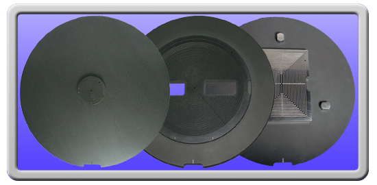

Home
Service
Tooling
Parts
About
Contact

Used Tooling
Willis Equipment offers used Chucks and Mask Holders. All used tooling is guaranteed to meet OEM specifications.
New and Custom Tooling
Willis Equipment offers new tooling as well as customized Chucks and Mask Holders to accommodate a variety of subsrtate sizes and processes.